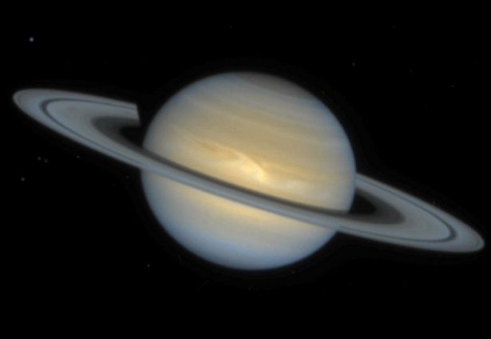

Saturno
|  |
|
Saturno, recibe su nombre de uno de los dioses más importantes de la mitología para griegos y romanos, quienes respectivamente se referían a él como Cronos y Saturno, y en sendas mitologías fueron padres de Zeus y Júpiter. Saturno es el sexto planeta en distancia al sol del sistema solar. También se trata del segundo planeta más grande. El elemento más llamativo de Saturno son sus 7 anillos, los cuales se cree que están compuestos millones de pedazos de hielo y roca procedentes cometas, asteroides o lunas que se desintegraron antes de llegar al planeta debido a la poderosa gravedad de Saturno. Saturno tiene 53 lunas conocidas con 30 lunas adicionales a la espera de la confirmación de su descubrimiento. |

|